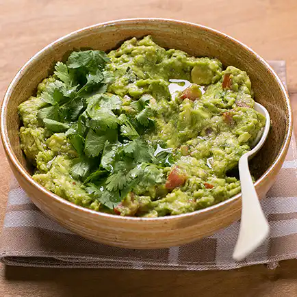

Receita de Guacamole

Descricao
Quer aprender como fazer guacamole? Se você é fã da culinária mexicana e ama essa iguaria, veio ao lugar certo! Confira todos os ingredientes necessários e o passo a passo para preparar em casa essa receita de guacamole simples e fácil.
Ingredientes
- 1 abacate brasileiro médio (ou 4 avocados)
- 1 cebola pequena
- 1 maço de coentro
- suco de 1 limão grande
- sal
- 1 tomate grande sem sementes
- 2 dentes de alho bem socados
- 1 pimenta malagueta sem sementes
- azeite extra virgem
Modo de fazer
- Amasse o abacate com um garfo, acrescente o alho socado, o suco de limão, sal e azeite a gosto e misture como um purê.
- Pique a cebola, o tomate e o coentro. Pique bem a pimenta.
- Acrescente os ingredientes picados ao "purê" de abacate.
- Sirva com chips, crackers, tacos, no burrito ou mesmo junto com arroz e feijão.